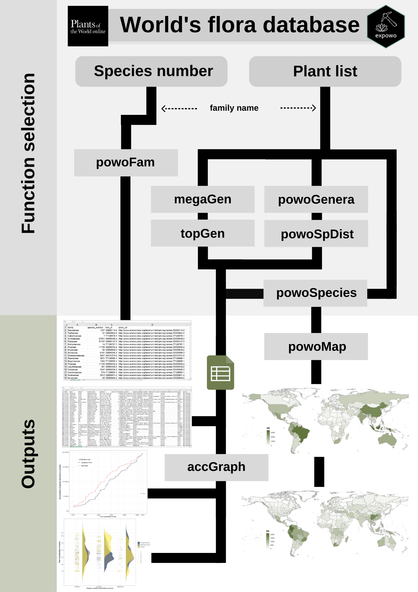

An R package for mining species checklist, diversity estimates, and distribution data for any genus or family of flowering plants from RGB Kew’s Plants of the World Online (POWO).
Overview
The main goal of the expowo package is to retrieve information about the diversity and distribution of any plant family as publicly available at the taxonomically verified database Plants of the World Online (POWO). The package is intended to efficiently mine the content within the source HTML pages for any specific genus and family. It can return a comma-separated values (CSV) file with the number of accepted species and country-level distribution for any genus as well as the full checklist of accepted species in any genus or family, their authorship, original publication and global distribution.
Before using expowo
Update R and RStudio versions
Please make sure you have installed the latest versions of both R (Mac OS, Windows) and RStudio (Mac OS / Windows: choose the free version).
Installation
You can install the latest development version of expowo from GitHub using the devtools package with the following R code:
install.packages("devtools")
devtools::install_github("DBOSlab/expowo")OBS.: To download the development version, you will need to have the Git software installed. And if your operating system is Microsoft Windows, you will also need to download the Rtools.
Otherwise, you will be able to install expowo more easily when it is available on CRAN, by just running the following R code:
install.packages("expowo")Usage
The package’s four major functions (powoGenera, powoSpecies, megaGen, and toptenGen) require only the name of the target family (or a vector with multiple family names) and the associated specific URI (Uniform Resource Identifier) that identifies the HTML page for each family in POWO. These four major functions work with other three auxiliary functions (getGenURI, getNumb, and getDist) to mine the plant data. Respectively, getGenURI mines the URI for each genus, getNumb mines the total number of species within any genus, and getDist does a complete search for native and introduced country-level distribution for any genus and species. To get the POWO URI for any accepted plant family, you can either look at the data frame object POWOcodes that come together with the installed expowo package, or you can use the function get_pow from the package taxize. So, the vector of URI codes is the main input file to everything you can do with expowo package. See the examples on how to use the expowo’s major functions for mining basic information on the global plant diversity and distribution in the ‘Articles’ section in our site.

Documentation
A detailed description of the expowo’s full functionality is available here.
The expowo package is being continuously constructed. If you want to make suggestions, let us know! We hope it will be helpful for your botanical research!
Citation
Zuanny, D. & Cardoso, D. (2022). expowo: An R package for mining plant diversity and distribution data. https://github.com/DBOSlab/expowo